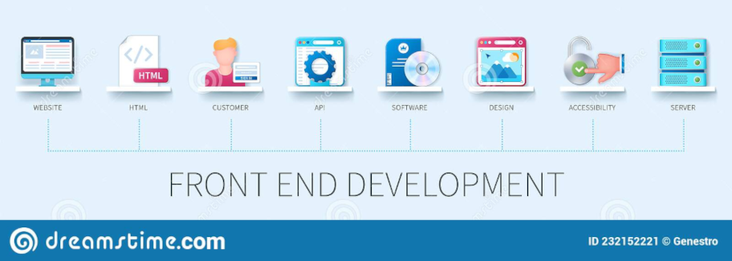

O que é Front-End na Programação?
De forma simples, o Front-end pode ser classificado como uma função de um programador que programa a parte visual de um site. Tudo aquilo que pode ser interagido, visualizado é o Front-end. Os desenvolvedores Front-end são responsáveis por fazer essa mágica! Através de um meio do código, interface gráfica e muitas outras tecnologias na Web, e ai, é que entra o HTML, CSS e JavaScript, que são as tecnologias mais famosas e usadas atualmente.
O sentido do termo Front-end Developer
O termo Front-end foi originado por conta do uso de tecnologias que necessitavam de deixar o site mais intuitivo e mas fácil de desenvolver pelo código. Ao pesquisar o termo pelo Google Trends encontra-se tecnologias como, "jQuerry" lançado em 2006, que deu uma força para esse termo que tanto usamos atualmente.

O Front-end no mercado
Na teoria um desenvolvedor front-end é capaz de replicar um layout elaborado por um designer ou até mesmo é capaz de criar o seu próprio layout, sendo dependente da característica de um projeto, empresa e do conhecimento pessoal. O perfil para se tornar um front-end não foge muito do que foi mencionado. Aprendendo as principais tecnologias para tal, como HTML5, CSS3 e JavaScript, podem ser o suficiente para pelo menos conseguir a primeira vaga como um profissional. E indo além, seria interessante também aprender Frameworks que facilitam a vida de um desenvolvedor front-end, as mais utilizadas:
- React;
- Angular;
- Vue;
- Ember.
Esses Frameworks utilizam-se muito do JavaScript.
As APIs também são muito importantes, com elas é possível do front-end se comunicar pelo código com o back-end.

Mas e o perfil?
Não muito diferente de qualquer outra área de programação, um desenvolvedor Front-end precisa ser curioso e autodidata(correndo sempre em busca de conhecimento). As tecnologias sempre evoluem, e por trás de todas essa evolução existem pessoas inovadoras e que estão em constante busca de conhecimento, sem parar! E por isso nada é diferente.
É só um teste! O.O essa página foi desenvolvida para comprovar conhecimentos no Front-End! Muito obrigado por sua leitura até aqui :)